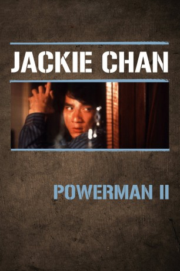

IMDB-Wertung: 6.5 / 10
IMDB-Wertung: 6.5 / 10  Metascore:
Metascore: 
Polizistin Barbara soll in Hongkong einen Brief mit wichtigen Informationen über die Drogenmafia abfangen. Die Super-Cops Fastbuck und Muscles unterstützen sie bei dieser gefährlichen Aufgabe...
 IMDB-Wertung: 6.5 / 10 Metascore:
Polizistin Barbara soll in Hongkong einen Brief mit wichtigen Informationen über die Drogenmafia abfangen. Die Super-Cops Fastbuck und Muscles unterstützen sie bei dieser gefährlichen Aufgabe...
Jahr: 1985
Dauer: 107 Minuten
FSK: 12
Land: Hong-Kong Studio: New Vision VideoTonspuren:
Untertitel: Deutsch,
Auflösung: 1080p (1920x1024) Größe: 8960 MB
Regisseur:  Sammo Kam-Bo Hung
Sammo Kam-Bo Hung
Drehbuch: Barry Haigh, Kin Lo, Cheuk-Hon Szeto, Barry Wong, Barry Wong
Soundtrack: Anders Nelsson
Darsteller:
 Eric Tsang als Roundhead / Blockhead
Eric Tsang als Roundhead / Blockhead Jackie Chan als Muscles
Jackie Chan als Muscles Richard Norton als Caucasian Assassin
Richard Norton als Caucasian Assassin Andy Lau als Associate of Muscles
Andy Lau als Associate of Muscles Michelle Yeoh als Judo Instructor
Michelle Yeoh als Judo Instructor Siu-Ho Chin als Person at the end
Siu-Ho Chin als Person at the end Richard Ng als Sandy
Richard Ng als Sandy Rosamund Kwan als Wang Yi-Ching
Rosamund Kwan als Wang Yi-Ching Biao Yuen als Ricky Fung
Biao Yuen als Ricky Fung Fat Chung als Moustached Assassin
Fat Chung als Moustached Assassin Yasuaki Kurata als Japanese Assassin
Yasuaki Kurata als Japanese Assassin Ma Wu als Magic Expert
Ma Wu als Magic Expert Billy Lau als Play Director
Billy Lau als Play Director Anthony Chan als Tour Guide Lotta / Larry
Anthony Chan als Tour Guide Lotta / Larry James Tien als Boss Lau Yan-foo
James Tien als Boss Lau Yan-foo Hoi Sang Lee als Boss Lau's Driver
Hoi Sang Lee als Boss Lau's Driver Kar Lok Chin als Warehouse Thug / Thai Assassin
Kar Lok Chin als Warehouse Thug / Thai Assassin Dick Wei als Warehouse Thug
Dick Wei als Warehouse Thug Phillip Ko als Warehouse Thug
Phillip Ko als Warehouse Thug Chia Yung Liu als Warehouse Thug
Chia Yung Liu als Warehouse Thug Yun-Kin Chow als Warehouse Thug
Yun-Kin Chow als Warehouse Thug Ha Huang als Warehouse Thug
Ha Huang als Warehouse ThugDatei: X:\HD-Eastern-Collections\Jackie Chan\Powerman\Powerman II (1985, FSK12, 1920x1024).mkv seit 09.12.2015
Festplatte: HD Eastern+Western
 Es gibt insgesamt 58 Filme in der Gruppe 'HD-Eastern-Collections\Jackie Chan'
Es gibt insgesamt 58 Filme in der Gruppe 'HD-Eastern-Collections\Jackie Chan'